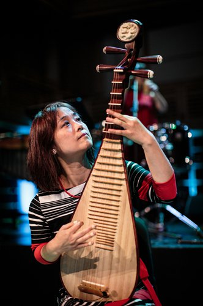
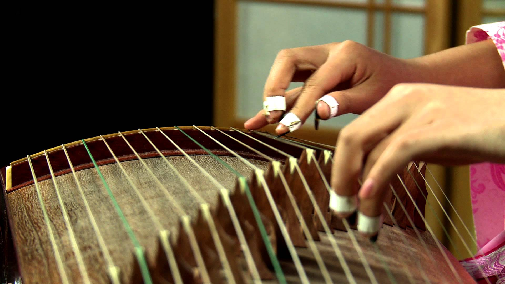
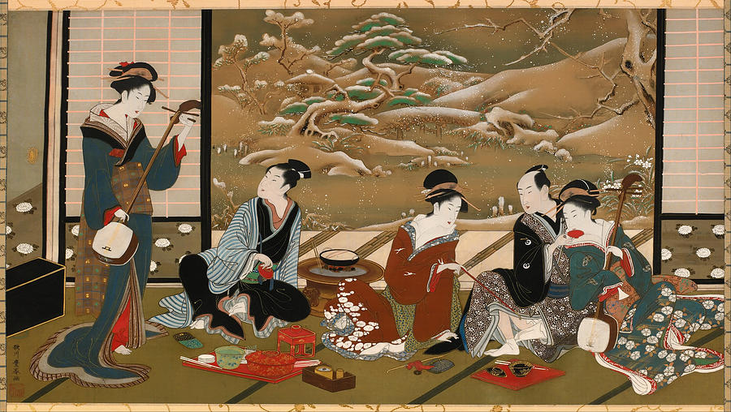

Music in China is strongly influenced by philosophy and concepts of important historical thinkers such as Confucius. Music is considered a highly calming influence, examples of this approach being space and fluency in performance. Sometimes there are moments of silence within the performance, which facilitates engagement and a connection between audience and players.
The tonality of Chinese music is pentatonic. This means it uses a scale of five notes for melodies. Harmonies are also created within this structure. Sometimes Chinese music is also heptatonic, using a seven-note scale, which is an extension of the pentatonic structure.
The texture of Chinese music is often monophonic, where only one instrument is playing , or heterophonic. A heterophonic texture is one where a core melody is simultaneously played with decorated versions of the same melody.
Chinese Traditional Music
Instruments
Instruments are categorised in types according to the materials from which they are made. These include strings bowed and plucked, woodwind, and both tuned and untuned percussion.
Instruments can be divided in even more detail into those made of gourds (early sheng instruments used these), bamboo (flutes), wood (string instruments), silk (although rarely used, strings can be made of silk), clay (used for a type of compact flute which can resemble an ocarina), metal (gongs), animal skin (drums) and even stone (used to create a ringing sound).
 
Japan
Japan is no longer perceived as home to the worst excesses of idol pop or inaccessible traditional music. In truth, Japanese musicians have for years been skillful at blending the traditional with the pop and coming up with some of the world's craziest concoctions. The music of Japan encompasses sounds from ancient gagaku to today's hottest roots acts, mixed with quintessential enka and post-war boogie-woogie - a compilation to blow away any lingering preconceptions.

Okinawan folk music is often accompanied by the sanshin whereas in mainland Japan, the shamisen accompanies instead. Other Okinawan instruments include the sanba (which produce a clicking sound similar to that of castanets), taiko and a sharp finger whistling called yubi-bue.
A pentatonic scale, which coincides with the major pentatonic scale of Western musical disciplines, is often heard in min'yō from the main islands of Japan, see minyō scale. In this pentatonic scale the subdominant and leading tone (scale degrees 4 and 7 of the Western major scale) are omitted, resulting in a musical scale with no half steps between each note. (Do, Re, Mi, So, La in solfeggio, or scale degrees 1, 2, 3, 5, and 6) Okinawan min'yō, however, is characterized by scales that include the half-steps omitted in the aforementioned pentatonic scale, when analyzed in the Western discipline of music. In fact, the most common scale used in Okinawan min'yō includes scale degrees 1, 2, 3, 4, 5, 6, and 7.